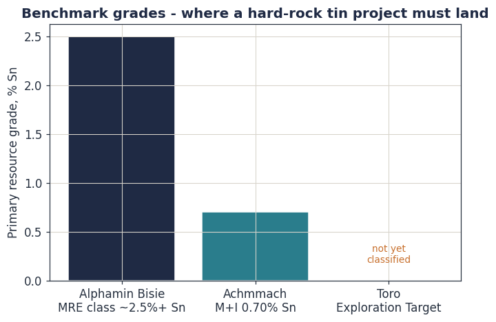

Foundations: Resources, Reserves and the Reporting Codes
Before a single variogram is fitted, you must know exactly what you are trying to produce, what word you are allowed to put on it, and who is legally accountable for it. This module installs that framework. Everything in Modules 2 to 6 is machinery in service of the definitions you learn here.
Learning objectives
- State precisely what a Mineral Resource and an Ore Reserve are, and articulate the test that separates them.
- Explain the CRIRSCO family of codes, why they exist, and the legal role of the Competent or Qualified Person.
- Place an estimate into the Inferred–Indicated–Measured framework and justify the category against evidence.
- Enumerate the modifying factors and explain how they convert a Resource into a Reserve.
- Define an Exploration Target and explain, in code terms, why Toro currently is one and is not yet a Resource.
1.1 The question resource estimation answers
A mineral deposit is, from a commercial point of view, a single quantity of money buried in a single volume of rock. The whole of resource estimation exists to answer one question precisely enough that capital will move on the answer:
For a defined volume of ground: how many tonnes are there, at what average grade, and with what level of confidence? The third clause is not optional. An estimate without a stated confidence is not a resource estimate — it is a guess with decimal places.
Notice the structure of the question. Tonnes and grade are the two estimated quantities; confidence is the meta-statement about how much those two quantities can be trusted. Geostatistics, which occupies Modules 4 and 5, is ultimately the mathematics of that third clause: it is the branch of estimation that attaches a defensible, quantified uncertainty to a spatial prediction. Everything else — sampling, data integrity, domaining, classification — exists to make that uncertainty statement honest.
The two estimated quantities combine into the number that actually matters, contained metal:
Grade carries units that must be handled with discipline. The Toro laboratory reports tin as the oxide SnO₂ in weight per cent, because X-ray fluorescence sees oxides. Metal accounting, contracts and benchmarks are quoted as the element Sn. The conversion is a fixed stoichiometric factor:
The exploration value chain
A resource estimate is not a free-standing document. It is one station on a value chain that runs from a geological idea to a financed mine. It is worth seeing the whole chain, because each estimation decision is constrained by the station before it and judged by the station after.
| Stage | Output | Toro status (May 2026) |
|---|---|---|
| Desktop study / target generation | Prospectivity model, ranked targets | Substantially complete |
| Reconnaissance | Field-confirmed anomalies, first geochemistry | Complete: 47 XRD, 40 XRF samples |
| Systematic sampling (pitting / trenching) | Stratigraphy and grade in 3D, an Exploration Target | In progress: pitting programme underway |
| Resource drilling | Drillhole database supporting a Mineral Resource | Not started: 13 priority collars defined |
| Mineral Resource estimate | Classified, code-compliant Resource statement | The destination of this course |
| Studies and Ore Reserve | Scoping, pre-feasibility, feasibility; a Reserve | Future |
| Financing, construction, production | An operating mine; reconciliation against the model | Future |
Each transition is a decision gate. If results do not justify the next, larger tranche of capital, the project is downgraded, deferred or relinquished. This "fail fast, fail cheap" logic is why a resource estimate is so heavily governed: it is the document on which the largest capital commitment of the entire chain is decided.
1.2 Why there are codes at all
Public reporting of mineral assets is regulated because the history of not regulating it is a history of fraud and ruin. Two episodes shaped the modern system. The Poseidon bubble (Australia, 1969–70): a nickel intersection, reported without standards, drove a share price from under a dollar to GBP 280 and back, wiping out retail investors. The Bre-X fraud (Busang, Indonesia, 1995–97): drill core was salted with placer gold; a claimed 70-million-ounce deposit was entirely fictitious; the collapse erased roughly USD 6 billion of value and a geologist died falling from a helicopter.
The response was a family of reporting codes: rule sets that constrain what may be publicly stated about a mineral asset, what evidence is required, and who is personally accountable.
The Committee for Mineral Reserves International Reporting Standards (CRIRSCO) maintains an international template. National codes implement it: JORC (Australasia), NI 43-101 with the CIM Definition Standards (Canada), SAMREC (South Africa), PERC (Europe, including the UK) and others. They differ in procedural detail but share one architecture, so a Resource is portable across exchanges. Nigeria has no domestic code, so a Toro estimate intended to raise capital will be reported under JORC or NI 43-101 — the standard your own exploration roadmap adopts.
Three principles run through every code in the family, and they should govern your own working practice long before any public report exists.
Transparency. The reader must be given enough information, clearly presented, to understand the estimate and not be misled. In NI 43-101 this is operationalised as Table 1, an "if-not-why-not" checklist: every relevant topic must be addressed, and silence on a topic is itself a disclosure failure.
Materiality. The report must contain all the information a reasonable investor would reasonably require to make a decision.
Competence. The estimate must be made by, and signed off by, a named, qualified, accountable individual.
A Competent Person (JORC) or Qualified Person (NI 43-101) is a named professional who takes personal, legal responsibility for the estimate. They must hold membership of a Recognised Professional Organisation, have a minimum of five years of experience relevant to the style of mineralisation and type of deposit under consideration, and be entitled to the designation. The phrase in italics matters for Toro: experience in hard-rock gold does not qualify a person to sign an alluvial tin placer. Your COMEG registration and NMGS membership are the route to this status in the Nigerian context; the relevance test will be satisfied by deposit-specific tin experience, on the placer side and the primary side separately.
1.3 Mineral Resource versus Ore Reserve
These two terms are not interchangeable and not a matter of style. The distinction is the single most important idea in this module.
A concentration of material of economic interest in or on the Earth's crust in such form, grade and quantity that there are reasonable prospects for eventual economic extraction. It is defined and estimated on the basis of geological evidence and knowledge, sampled appropriately.
The economically mineable part of a Measured or Indicated Mineral Resource. It is demonstrated by at least a Pre-Feasibility Study that has applied the modifying factors and shown extraction to be justified at the time of reporting.
Three consequences follow immediately, and each one is regularly violated by people who should know better.
A Resource is geological; a Reserve is engineering plus economics. A Resource asks: is there a reasonable prospect that this could one day be mined economically? A Reserve asks: have we demonstrated, with a study, that it can be? The Resource gate is a low bar deliberately ("reasonable prospects", "eventual"); the Reserve gate is a high, study-backed bar.
Resources are not a subset of Reserves — it is the reverse. A Reserve is carved out of the Measured and Indicated parts of a Resource. By near-universal convention Resources are reported inclusive of any Reserves (you state this explicitly to avoid double counting). An Inferred Resource can never become a Reserve without first being upgraded by more drilling — it is too uncertain to carry into a study's economics.
"Reasonable prospects for eventual economic extraction" (RPEEE) is a real, enforceable test, not a phrase. It is what stops you reporting a Resource on material that could never pay. In practice you demonstrate RPEEE by constraining the estimate inside a conceptual mining envelope — for Toro's primary target, an optimised pit shell run on a long-term tin price; for the alluvial target, a realistic dredge or wash-plant scenario — and by applying a reasonable cut-off grade. Material that does not sit within a plausible mining shape at a plausible price is not a Resource.

1.4 The classification framework
Within a Mineral Resource, confidence is graded into three categories. They are not arbitrary bands — each is a statement about how much of the deposit's geology and grade has been demonstrated rather than assumed.
The codes deliberately express these as a two-dimensional structure. One axis is geological confidence, which the Competent Person raises by drilling, sampling and verification. The other axis is the modifying factors, which a study engineer applies to test economic mineability. The famous JORC box is simply that 2D space drawn out:
It is tempting to think the categories are defined by drill spacing alone — "50 m equals Measured". They are not. Drill spacing is evidence, but the category is a judgement about continuity made by the Competent Person, supported by variography (Module 4), geological understanding, QAQC, and quantitative tools such as kriging-variance and conditional-simulation studies. Two deposits at identical drill spacing can warrant different categories if one is geologically erratic and the other is continuous.
1.5 The modifying factors
The modifying factors are the set of real-world considerations that convert a geological Resource into an economically mineable Reserve. A code-compliant study must address each one explicitly.
| Factor | The question it asks | Toro relevance |
|---|---|---|
| Mining | Can it physically be mined, at what dilution and recovery? | Alluvial: dredge or wash plant. Primary: open pit on the cupola. |
| Processing / metallurgical | Can the metal be liberated and recovered? | Cassiterite is gravity-recoverable; columbite needs magnetic separation. Test work required. |
| Economic | Does it pay at a realistic long-term price? | Set against the long-term tin price in your management briefing. |
| Marketing | Is there a buyer, at what concentrate specification and penalty schedule? | Tantalum penalties and smelter terms matter for a Sn-Nb-Ta concentrate. |
| Infrastructure | Power, water, roads, accommodation? | Bauchi grid access, dry-season water for washing. |
| Legal / tenure | Is title secure for the life of mine? | ANRML26-137 licence validity and renewal. |
| Environmental | Can it be permitted and closed? | Drainage disturbance from alluvial mining; EIA. |
| Social / governmental | Community, ASM coexistence, government? | Active artisanal miners on the licence — a central social factor at Toro. |
For the Toro alluvial target one modifying factor deserves early attention: the wash gravels are already being mined by artisanal operators. That is simultaneously a powerful confirmation of grade continuity (a geological asset) and a serious social and tenure factor (a Reserve-conversion risk). The codes require both faces of that fact to be reported.
1.6 The Exploration Target — and why Toro is one
There is a defined, legitimate way to make a public statement about mineralisation that is too poorly sampled to be a Resource. It is the Exploration Target, and the codes police it tightly.
A statement or estimate of the exploration potential of a mineral deposit in a defined geological setting, expressed as ranges of tonnage and grade. It must be clearly labelled, must state that it is conceptual, must state that there has been insufficient exploration to estimate a Mineral Resource, and must state that it is uncertain whether further exploration will result in one. It must not be expressed as, or be capable of being misread as, a Mineral Resource.
Your own Proposed Pitting Programme already uses this language correctly: it promises "an assessment of alluvial resource potential (reported as an Exploration Target, not a Mineral Resource)." That is the right call, and the reason is structural rather than a matter of effort.
The current Toro grade data is a reconnaissance dataset: 40 XRF analyses, collapsing to roughly 26 distinct pit locations with a usable in-situ grade once laboratory mineral-separation fractions are removed (Module 2 shows that filtering in detail). Those pits are spread across three drainages over several kilometres. Two facts follow directly. First, the sampling density cannot support an assumption of grade continuity at any mining scale — so no category above Exploration Target is defensible. Second, the panned-concentrate sampling medium does not by itself give an in-situ g/m³ grade; that requires the volume-grade chain built in Modules 2 and 6. Toro is an Exploration Target because the data type and density make it one, and only drilling and systematic pitting can change that.
1.7 The Achmmach benchmark
It helps to see the destination. Atlantic Tin's Achmmach project in Morocco — the benchmark named in your exploration roadmap — reached, after roughly 18 years of systematic work, a Measured and Indicated Resource of 22.4 Mt at 0.70% Sn (about 156,000 t contained tin) and Proven and Probable Reserves of 7.0 Mt at 0.82% Sn (about 58,000 t contained tin).
Read those two lines through this module. The Resource is the larger, geologically defined quantity. The Reserve is the smaller part of it that a feasibility study, applying the modifying factors, showed could actually be mined — carved from the Measured and Indicated material, at a slightly higher grade because marginal material fell below cut-off. That is the Resource-to-Reserve relationship of section 1.3, in real numbers. Toro's task over the next five to seven years is to earn the right to write a comparable pair of lines.